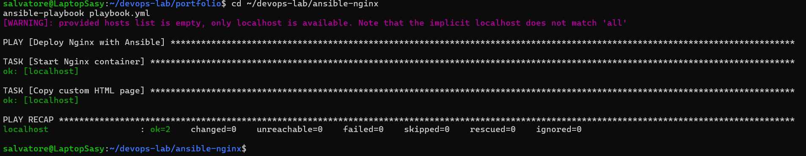
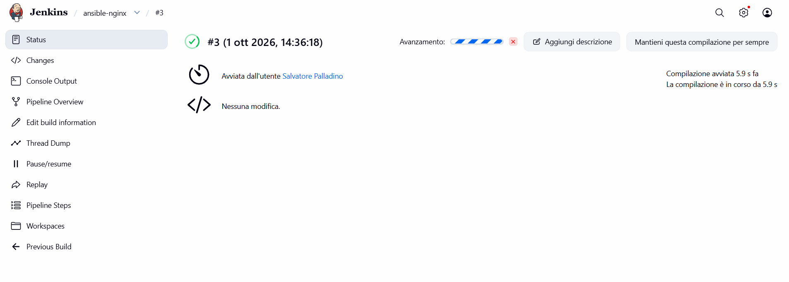
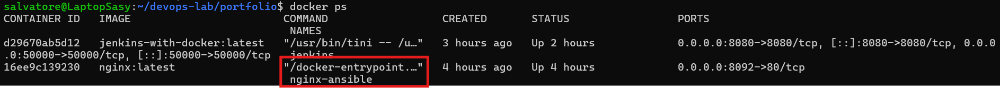

DEVOPS PROJECT · 01
Ansible Nginx
CI/CD Pipeline
A hands-on DevOps project focused on automated deployment, containerization and CI/CD using Git, Jenkins, Ansible, Docker and Nginx.
01 — OVERVIEW
Project Overview
The project demonstrates a complete deployment workflow starting from a Git repository and ending with a running Nginx container serving a custom web application.
Jenkins is used to automate the pipeline, while Ansible handles the deployment configuration and Docker provides the containerized runtime environment.
02 — ARCHITECTURE
Architecture
03 — TECHNOLOGIES
Technologies
04 — AUTOMATION
Ansible Automation
Ansible is responsible for defining the desired state of the Nginx deployment.

Ansible playbook executing the automated Nginx deployment.
The playbook starts the Nginx container and copies the custom HTML application into the container.
community.docker.docker_container:
name: nginx-ansible
image: nginx:latest
state: started
restart_policy: unless-stopped
ports:
- "8092:80"
05 — CI/CD
Jenkins Pipeline
Jenkins automatically checks out the repository and executes the Ansible deployment through a dedicated Ansible runner container.

Jenkins pipeline executing the automated Ansible deployment.
GitHub
↓
Jenkins
↓
Ansible Runner
↓
ansible-playbook playbook.yml
↓
Docker Engine
06 — CONTAINER DEPLOYMENT
Docker Deployment
The application runs inside an Nginx Docker container. Docker provides an isolated and reproducible runtime environment for the deployment.

Nginx container running through Docker after the automated deployment.
07 — TROUBLESHOOTING
Troubleshooting
During the project, Jenkins initially encountered a Docker socket mounting issue.
The Jenkins container was recreated while preserving the Jenkins home volume. Docker access was then restored through the Docker socket, allowing Jenkins to launch the Ansible runner container.
08 — RESULT
Deployment Result
The final pipeline successfully deploys the Nginx container and serves the custom dashboard on port 8092.
09 — SOURCE CODE